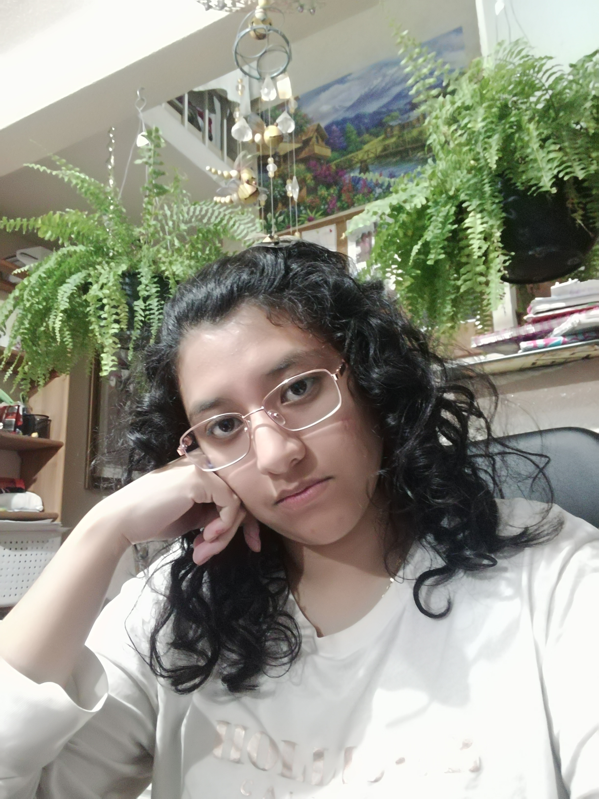

Margarita Zárate Pérez
Mi nombre es Margarita Zárate Pérez me gusta que me digan maggie, tengo 24 años y actualmente curso el noveno semestre de la licenciatura en Diseño Gráfico en la Benemérita Universidad Autónoma de Puebla. Durante mi trayectoria académica, he cultivado habilidades significativas en liderazgo, trabajo en equipo y enfoque a resultados, lo que me ha permitido desarrollarme tanto en el ámbito profesional como personal.Me caracterizo por ser una persona ingeniosa, hábil, soñadora y entusiasta. Me considero respetuosa, amable y comprensiva, siempre con una actitud positiva y una gran disposición para aprender y crecer.
Desde hace algún tiempo, he tenido la oportunidad de aplicar mis conocimientos en pequeños trabajos para familiares, lo que me ha permitido ganar experiencia en el diseño gráfico aplicado a distintos proyectos. Además, cuento con un emprendimiento dedicado a la creación de diseños personalizados para niños, donde combino creatividad y funcionalidad para ofrecer productos únicos y atractivos. A través de este proyecto, he ido perfeccionando mis habilidades y ampliando mi portafolio, lo que me ha permitido crecer profesionalmente y enfrentar nuevos retos en el mundo del diseño.Entre mis principales habilidades destacan la honestidad, la creatividad, la capacidad de adaptación y el trabajo en equipo. Además, soy una persona dedicada, perseverante y comprometida con mis responsabilidades, lo que me impulsa a alcanzar mis metas con disciplina y esfuerzo.
Tengo un gran interés por las actividades artísticas, especialmente el dibujo, la escultura y la pintura, ya que me permiten expresar mis ideas de manera creativa e innovadora. También disfruto de las manualidades, la animación y la edición de imágenes, áreas que enriquecen mi visión como diseñadora.En cuanto a mis pasatiempos, me gusta ver películas y analizar su diseño visual, así como explorar nuevas técnicas artísticas en el dibujo y la escultura con diferentes materiales. La fotografía y la edición de imágenes también forman parte de mis intereses, junto con el anime y los videojuegos, los cuales me inspiran en el ámbito visual y narrativo. Además, disfruto la repostería y viajar para conocer nuevas culturas y fuentes de inspiración para el diseño.Mi objetivo es convertirme en una profesional competitiva y destacada en el mundo del diseño gráfico, sobresaliendo por mi esfuerzo y dedicación. Aspiro a contribuir al crecimiento y desarrollo de la sociedad, ayudando y colaborando activamente para generar un impacto positivo en las personas y su entorno.